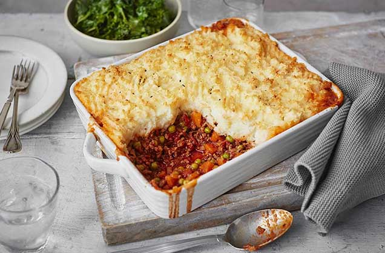

Cottage Pie

Description
Whilst it iis called a pie it has nothing to do with pastry. Instead you have delicious potato mash layered on minced beef sauce mixed with carrots and peas covered with a cheese crust. Simple but tasty comfort food.
Ingredients
- Olive Oil
- Potatoes
- Minced Beef
- Onion
- Carrots
- Peas
- Grated Cheese
- Gravy Thickener
- Butter
- Milk
- Salt
- Black Pepper
Steps
- peal and boil potato in salted water
- brown onions in some oil till are translucent
- brown beef along side onions
- add some water to the beef and onion
- drain potatoes
- mash up potatoes
- add butter and milk to the potato mash to taste
- add a little more water to the fried beef and onions and let it simmer for a little longer. (You can also use beef stock instead to add more flavour)
- preheat oven at 200 degrees Celsius
- add gravy thickener to the sauce to achieve desired thickness
- salt and pepper to taste
- add carrots and peas to the sauce and simmer for a few minutes. Be prepared to add more water/beef stock if the sauce becomes thicker than you would like.
- Add sauce into an oven dish and try to even it out.
- Layer potato mash on top of the sauce and again try to even it out nicely.
- Cover with cheese generously.
- Bake for 12 to 15 minutes. The cheese should be nicely browned.